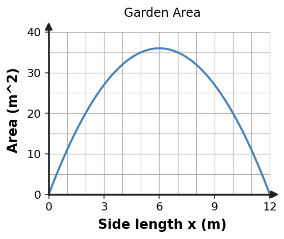

Algebra 1 · Unit 6 · Section 6.5 · Investigation
Quadratic Optimization Lab
Quadratic Modeling and Optimization
Learning Target: Students will use quadratic functions to model real-world situations and interpret maximums, minimums, and intercepts.
Directions
- Work with a partner unless your teacher assigns a different grouping.
- Show the evidence you use, not only the final answer.
- When a representation changes, keep the meaning of the quantities attached to your work.
- Revise an answer if later evidence shows that your first claim was incomplete.
Part 1 · Optimization Data
A rectangular garden has 24 meters of fencing for all four sides. Let $x$ be one side length. Then the other side is $12-x$.
| $x$ | 1 | 2 | 3 | 4 | 5 | 6 |
|---|---|---|---|---|---|---|
| Area $A=x(12-x)$ |
Part 2 · Graph the Model

Identify the vertex and intercepts. Which feature answers the optimization question?
Part 3 · Interpret the Maximum
State the dimensions that maximize area and the maximum area. Explain why inputs outside $0\lt x\lt 12$ are not meaningful for the garden.
Part 4 · Model Choice
Which form of the quadratic would you prefer for finding the maximum? Which form makes the zero-area boundaries visible? Explain.